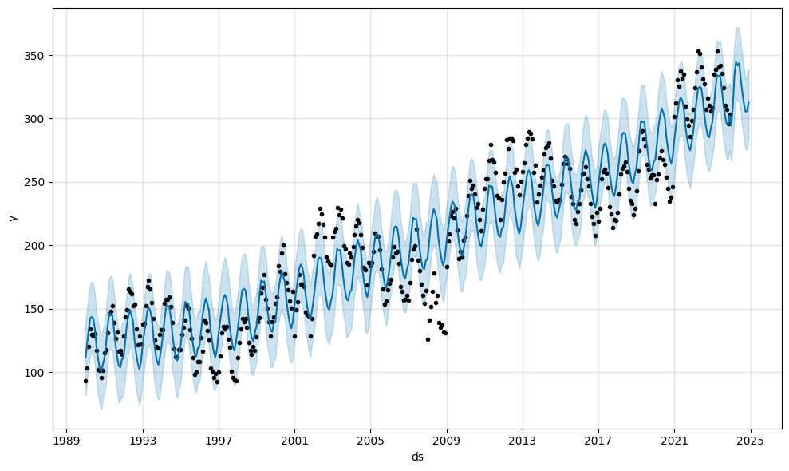

Project
Built demand forecasts for energy-efficient appliances using 30+ years of data. Focused on designing models that balance short-term operational needs and long-term planning under real-world constraints.
Methodology
- Data Prep: Cleaned negative and missing demand values; decomposed into trend, cyclical, seasonal, irregular parts.
- Baseline Modeling: Applied ARIMA(1,1,1) and SARIMA(1,1,1)(1,1,1,12); evaluated fit using AIC/BIC and residual diagnostics.
- External Variable Test: Added dummy sine proxies to SARIMAX; confirmed no effect, highlighting the need to integrate real external drivers (e.g., weather, marketing).
- Prophet Modeling: Compared against Prophet for flexible trend/seasonality handling; assessed tradeoffs across models.
Key Outcomes
- Quantified performance (MAE, RMSE) across ARIMA/SARIMA/SARIMAX and Prophet.
- Demonstrated the importance of business-relevant features for boosting predictive power.
- Delivered a modular forecasting pipeline ready for business driver integration.
Reflection
- Challenge: Off-the-shelf time series models hit a performance ceiling without meaningful external data.
- Approach: Explored adding proxy variables; learned that model improvements depend on context-specific business inputs.
- Takeaway: Modeling alone isn’t enough; identifying and integrating real drivers is key to producing actionable forecasts.

Figure 01
Report
📍 Notebook (nbviewer):
HERE
📌 Data: Historical demand (1990–2023)